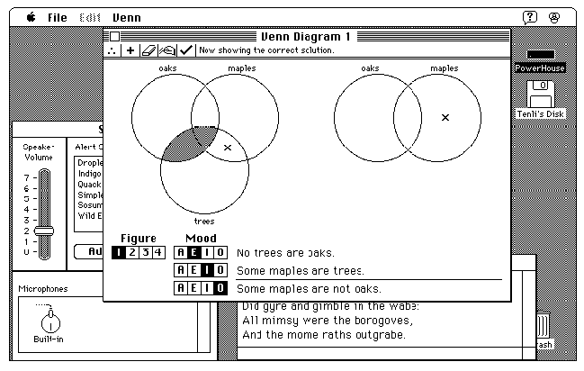

About Processes
The Macintosh Operating System, the Finder, and several other system software components work together to provide a multitasking environment in which a user can have multiple applications open at once and can switch between open applications as desired. To run in this environment, however, your application must follow certain rules governing its use of the available system resources. Because the smooth operation of all applications depends on their cooperation, this environment is known as a cooperative multitasking environment.Although a number of documents and applications can be open at the same time, only one application is the active application. The active application is the application currently interacting with the user; its icon appears at the right side of the menu bar. The active application displays its menu bar and is responsible for highlighting the controls of its frontmost window. In Figure 9-1, Venn Diagrammer is the active application. Windows of other applications are visible on the desktop behind the frontmost window.
- Note
- The cooperative multitasking environment is available in system software versions 7.0 and later, and when the MultiFinder option is enabled in earlier system software versions.

Figure 9-1 The desktop with several applications open

The Operating System schedules the processing of all applications and desk accessories, known collectively as processes. When a user opens an application, the Operating System loads the application code into memory and schedules the application to run at the next available opportunity, usually when the current process relinquishes the CPU. In most cases, the application runs immediately (or so it appears to the user).
When your application is first launched, it is the foreground process. Usually the foreground process has control of the CPU and other system resources, but it can agree to relinquish control of the CPU if there are no events (other than null events) pending for it. A process that is open but that isn't currently the foreground process is said to be a background process.
A background process can receive processing time when the foreground process makes an event call (that is, calls
WaitNextEventorEventAvail) and there are no events pending for that foreground process. The Process Manager sends a null event to the background process, thereby informing it that it is now the current process and can perform whatever background processing it desires. The background process should make an event call periodically in order to relinquish the CPU and ensure a timely return to foreground processing when necessary.The CPU is available only to the current application, whether it is running in the foreground or the background. The application can be interrupted only by hardware interrupts, which are transparent to the application. However, to give processing time to background applications and to allow the user to interact with your application and others, you must periodically call the Event Manager's
WaitNextEventorEventAvailfunction to allow your application to relinquish control of the CPU for short periods. By using these event routines in your application, you allow the user to interact not only with your application but also with other applications.The method by which the available processing time is distributed among multiple processes is known as context switching (or just switching). All switching occurs at a well-defined time, namely, when an application calls
WaitNextEvent. When a context switch occurs, the Process Manager allocates processing time to a process other than the one that had been receiving processing time. Two types of context switching may occur: major and minor.A major switch is a complete context switch: an application's windows are moved from the back to the front, or vice versa. In a major switch, two applications are involved, the one being switched to the foreground and the one being switched to the background. The Process Manager switches the A5 worlds of both applications, as well as the relevant low-memory environments. If those applications can handle suspend and resume events, they are so notified at the time that a major switch occurs.
A minor switch occurs when the Process Manager gives time to a background process without bringing the background process to the front. The two processes involved in a minor switch can be two background processes or a foreground process and a background process. As in a major switch, the Process Manager switches the A5 worlds and the low-memory environments of the two processes. However, the order of windows is not switched, and neither process receives either suspend or resume events.
When the frontmost window is an alert box or modal dialog box, major switching does not occur, although minor switching can. To determine whether major switching can occur, the Operating System checks (among other things) whether the window definition procedure of the frontmost window is
dBoxProc, because the typedBoxProcis specifically reserved for alert boxes and modal dialog boxes. (If the frontmost window is a movable modal dialog box, major switching can still occur.)
- Note
- Your application can also be switched out if it calls a system software routine that internally makes an event call. For example, when your application calls
ModalDialog, a minor switch can occur.